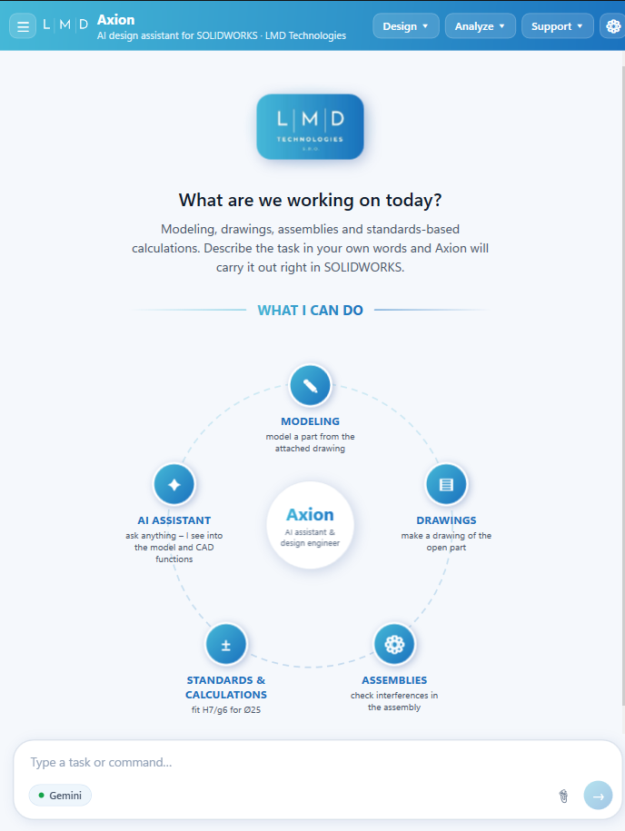
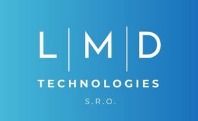

The AI design engineer inside SOLIDWORKS
Fewer reworks, fewer questions from the shop floor. Axion checks drawings, standards, manufacturability and cost right inside SOLIDWORKS, and connects engineering with the whole company.
Works in English and Czech – other languages on request
Axis + Action = Axion
Time savings and fewer complaints are based on our testing. Actual results depend on the type of drawings and on your processes.
AI that models for you sounds great. Until you redo every detail it guessed.
Axion takes a different route. It is the engineer's partner right inside SOLIDWORKS: it reads how your model is built, what your drawing really says, what your shop can make and what it will cost. Fewer reworks, fewer questions from the shop floor, fewer complaints after production.
An engineer that knows the drawing, the shop and the whole company.
Understands drawings and production
Reads live geometry and drawing symbols, checks standards, manufacturability and cost, and finds parts you have already designed. It saves the time of your most expensive people: senior engineers.
The whole company in one place
Data from PDM/PLM, ERP, MES and other departments in one interface. It writes only to PDM/PLM and reads other systems via API.
Your data stays yours
Most features run locally without AI. AI joins only in the chat, with your own API key and only what the question needs.

This is what Axion looks like in SOLIDWORKS.
A task pane docked next to your model. No separate app, no browser tab.
- 1
Design · Analyze · Support
Tools grouped the way engineers work: modeling and drawings, checks and calculations, help and contact.
- 2
What I can do
Modeling, drawings, assemblies, standards and calculations, AI assistant. The overview adapts to the functions your company deploys.
- 3
Plain-language composer
Describe the task in your own words or attach a drawing. The AI provider is your choice.
- 4
Settings for every user
Font size for the whole panel and company-specific rules, templates and data sources.


What managers and engineers ask
Does my data leave the company?
Local features run entirely in the add-in. Only chat questions go to the AI provider you choose, with just the context the question needs. A local AI model without internet access is also an option.
What does the AI cost to run?
Very little. A typical manufacturability check prompt costs less than one euro cent. With Gemini, a user working with all functions, including AI modeling and edits, typically spends around €8–16 per month. Local functions run without AI and cost nothing extra.
Which information systems can Axion connect to?
Standard systems such as SAP or Helios, MES systems and others that provide an API. Axion reads data from them; items are created and edited only in PDM/PLM.
Do we have to take a fixed package?
No. There is no locked core. At the kick-off meeting you choose what Axion should do and we build it to match. Functions can be added, changed or removed later.
How do we start?
Book a demo. We'll show Axion on your own parts and drawings and set it up for your standards.
See Axion on your own models
Write to us and we'll set up a demo on your parts, drawings and company standards.
